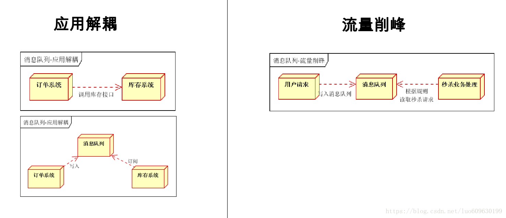
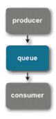
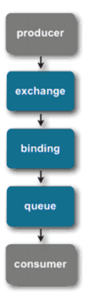

1. 概述
大多应用中，可通过消息服务中间件来提升系统异步通信、扩展解耦能力
1.1. 消息服务中两个重要概念
消息代理（message broker）和目的地（destination） 当消息发送者发送消息以后，将由消息代理接管，消息代理保证消息传递到指定目 的地。
1.2. 消息队列主要有两种形式的目的地
1.2.1. 队列（queue）：点对点消息通信（point-to-point）
1.2.2. 主题（topic）：发布（publish）/订阅（subscribe）消息通信


1.3. 点对点式
消息发送者发送消息，消息代理将其放入一个队列中，消息接收者从队列中获取消息内容， 消息读取后被移出队列，消息只有唯一的发送者和接受者，但并不是说只能有一个接收者。
1.4. 发布订阅式
发送者（发布者）发送消息到主题，多个接收者（订阅者）监听（订阅）这个主题，那么 就会在消息到达时同时收到消息
1.5. JMS（Java Message Service）JAVA 消息服务
基于 JVM 消息代理的规范。ActiveMQ、HornetMQ 是 JMS 实现。
1.6. AMQP（Advanced Message Queuing Protocol）
高级消息队列协议，也是一个消息代理的规范，兼容 JMS – RabbitMQ 是 AMQP 的实现。
1.7. JMS 与 AMQP 对比
1.7.1. JMS
通常而言提到 JMS（Java MessageService）实际上是指 JMS API。JMS 是由 Sun 公司早期提出的消息标准，旨在为 java 应用提供统一的消息操作，包括 create、send、receive
等。JMS 已经成为 Java Enterprise Edition 的一部分。从使用角度看，JMS 和 JDBC 担任差不多的角色，用户都是根据相应的接口可以和实现了 JMS 的服务进行通信，进行相关的操作。
JMS 通常包含如下一些角色：
Elements | Notes |
JMS provider | 实现了JMS接口的消息中间件，如ActiveMQ |
JMS client | 生产或者消费消息的应用 |
JMS producer/publisher | JMS消息生产者 |
JMS consumer/subscriber | JMS消息消费者 |
JMS message | 消息，在各个JMS client传输的对象； |
JMS queue | Provider存放等待被消费的消息的地方 |
JMS topic | 一种提供多个订阅者消费消息的一种机制；在MQ中常常被提到，topic模式。 |
JMS 提供了两种消息模型，peer-2-peer(点对点)以及 publish-subscribe（发布订阅）模型。当采用点对点模型时，消息将发送到一个队列，该队列的消息只能被一个消费者消费。而采用发布订阅模型时，消息可以被多个消费者消费。在发布订阅模型中，生产者和消费者完全独立，不需要感知对方的存在。
消息如何从 producer 端达到 consumer 端由 message-routing 来决定。在 JMS 中，消息路由非常简单，由 producer 和 consumer 链接到同一个 queue（p2p）或者 topic（pub/sub）来实现消息的路由。JMSconsumer 同时支持 message selector（消息选择器），通过消息选择器，consumer 可以只消费那些通过了 selector 筛选的消息。在 JMS 兄中，消息路由机制的图示如下：

常见的消息队列，大部分都实现了 JMS API，可以担任 JMS provider 的角色，如 ActiveMQ，Redis 以及 RabbitMQ 等。
1.7.2. AMQP
AMQP（advanced message queuing protocol）在 2003 年时被提出，最早用于解决金融领不同平台之间的消息传递交互问题。顾名思义，AMQP 是一种协议，更准确的说是一种 binary wire-level protocol（链接协议）。这是其和 JMS 的本质差别，AMQP 不从 API 层进行限定，而是直接定义网络交换的数据格式。这使得实现了 AMQP 的 provider 天然性就是跨平台的。意味着我们可以使用 Java 的 AMQP provider，同时使用一个 python 的 producer 加一个 rubby 的 consumer。从这一点看，AQMP 可以用 http 来进行类比，不关心实现的语言，只要大家都按照相应的数据格式去发送报文请求，不同语言的 client 均可以和不同语言的 server 链接。
在 AMQP 中，消息路由（messagerouting）和 JMS 存在一些差别，在 AMQP 中增加了 Exchange 和 binding 的角色。producer 将消息发送给 Exchange，binding 决定 Exchange 的消息应该发送到那个 queue，而 consumer 直接从 queue 中消费消息。queue 和 exchange 的 bind 有 consumer 来决定。AMQP 的 routing scheme 图示过程如下：

目前 AMQP 逐渐成为消息队列的一个标准协议，当前比较流行的 rabbitmq、stormmq 都使用了 AMQP 实现。
1.7.3. 最后将 JMS 和 AMQP 的各项对比如下
| JMS | AMQP |
定义 | Java api | 网络线级协议 |
跨语言 | 否 | 是 |
跨平台 | 否 | 是 |
Model | 提供两种消息模型： （1）、Peer-2-Peer （2）、Pub/sub | 提供了五种消息模型： （1）、direct exchange （2）、fanout exchange （3）、topic change （4）、headers exchange （5）、system exchange 本质来讲，后四种和JMS的pub/sub模型没有太大差别，仅是在路由机制上做了更详细的划分； |
支持消息类型 | 多种消息类型： TextMessage MapMessage BytesMessage StreamMessage ObjectMessage Message （只有消息头和属性） | byte[] 当实际应用时，有复杂的消息，可以将消息序列化后发送。 |
综合评价 | JMS 定义了JAVA API层面的标准；在java体系中，多个client均可以通过JMS进行交互，不需要应用修改代码，但是其对跨平台的支持较差； | AMQP定义了wire-level层的协议标准；天然具有跨平台、跨语言特性。 |
1.8. Spring 支持
spring-jms 提供了对 JMS 的支持
spring-rabbit 提供了对 AMQP 的支持
需要 ConnectionFactory 的实现来连接消息代理
提供 JmsTemplate、RabbitTemplate 来发送消息
@JmsListener（JMS）、@RabbitListener（AMQP）注解在方法上监听消息代理发布的消息
@EnableJms、@EnableRabbit 开启支持
1.9. Spring Boot 自动配置
JmsAutoConfiguration
RabbitAutoConfiguration
参考文档：
1、 http://en.wikipedia.org/wiki/AMQP
2、 http://en.wikipedia.org/wiki/Java_Message_Service
3、 http://www.bytespring.com/blog/understanding-differences-between-amqp-and-jms